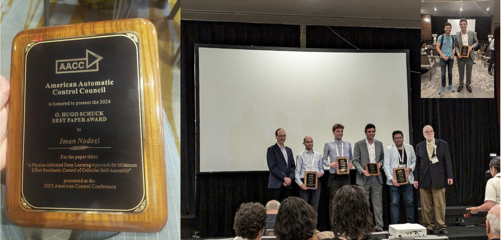

Iman Nodozi
Email: inodozi[at]ucsc[dot]edu
Hello! I'm Iman Nodozi, a recent Ph.D. graduate in Electrical and Computer Engineering from UC Santa Cruz, where I worked under the supervision of Abhishek Halder. My research focuses on Stochastic Control, Hybrid Systems, and Convex Optimization. I am currently working as a Senior Systems Engineer at onsemi.
Outside of work, I enjoy hiking, watching movies, playing piano, surfing, and running.
| Home | Research | Publications | Education | Experience | Awards | Vitae |
|---|
2024 Hugo Schuck American Automatic Control Council's Best Application Paper Award

Graduate Dean's Travel Grant, UCSC, July 2024
Dissertation Year Fellowship, Baskin School of Engineering 2023-2024
Regents Fellowships, University of California, Santa Cruz, 2019-2020